Les captures montrent un personnage d'exemple, « Aldric le Veilleur ».
1. Installer et mettre à jour l'app
L'app n'est pas sur le Play Store : on l'installe à partir d'un fichier .apk téléchargé sur GitHub. C'est sans danger, mais Android demande une autorisation la première fois.
Première installation
Sur ton téléphone Android, ouvre le lien : github.com/Jean-CharlesBoe/Sans-Nom/releases/latest
En bas de la page, dans la partie Assets, touche le fichier SansNom-vX.Y.Z.apk pour le télécharger.
Ouvre le fichier téléchargé (depuis la notification de téléchargement, ou l'app Fichiers → Téléchargements).
Android demande d'autoriser l'installation depuis ton navigateur : touche Paramètres, active Autoriser depuis cette source, puis reviens en arrière.
Touche Installer.
Si Play Protect affiche « application inconnue » : touche Plus d'infos puis Installer quand même. C'est normal pour une app qui ne vient pas du Play Store.
L'app Sans Nom apparaît avec tes autres applications.
Mettre à jour
Même chemin : télécharge le nouveau fichier .apk depuis le même lien et installe-le. La nouvelle version s'installe par-dessus l'ancienne et garde tous tes personnages. Le numéro de version installé est écrit en bas de l'écran d'accueil.
Ne désinstalle jamais l'app pour la mettre à jour : désinstaller efface les fiches enregistrées sur le téléphone. Si tu dois vraiment la désinstaller, fais d'abord une sauvegarde (voir partie 8).
Où sont mes données ?
Tes personnages sont enregistrés dans le téléphone, pas sur internet : l'app fonctionne sans connexion, et personne d'autre n'y a accès. En contrepartie, c'est à toi de faire des sauvegardes de temps en temps (un seul bouton, partie 8).
2. L'écran d'accueil
C'est la liste de tes personnages.
Créer un personnage : écris son nom dans le champ du haut et touche Créer. Sa fiche s'ouvre directement.
Ouvrir une fiche : touche le nom du personnage.
Supprimer : touche Supprimer puis, pour confirmer, Confirmer dans les 4 secondes. La suppression est définitive.
En dessous, la carte Sauvegarde indique la date de ta dernière sauvegarde et permet de sauvegarder ou d'importer tes fiches (voir partie 8). Elle devient rouge si tu as modifié une fiche et n'as pas sauvegardé depuis plus de 7 jours.
Tout en bas : le numéro de version de l'app.
Le bouton retour du téléphone ferme d'abord une fenêtre ouverte, puis revient à la liste, puis quitte l'app.
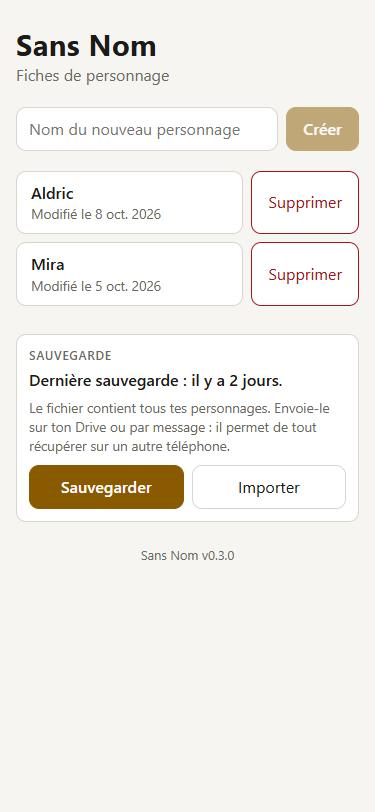
L'accueil : la liste des personnages et la carte Sauvegarde.
3. La fiche : onglet Carac
En haut, la flèche ← revient à la liste, et le crayon ✎ passe en mode édition (partie 5). Juste en dessous, trois onglets : Carac, Compétences, Invocations. Tout s'enregistre automatiquement, il n'y a pas de bouton « Enregistrer ».
Identité, caractéristiques et bonus temporaires.
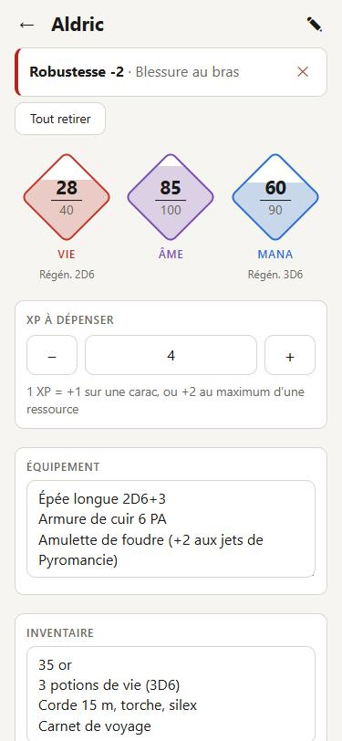
Ressources, XP, équipement et inventaire.
Identité
Titre, race, élément (pour un Élémentalien), âge et pratiques immatérielles.
Les 8 caractéristiques
Le chiffre dans le cercle est la valeur finale, bonus temporaires compris. Il est vert quand un bonus s'applique, rouge quand c'est un malus.
La petite pastille indique les avantages (+2 = 2 relances du jet) ou les désavantages (-1).
Ressources, XP, équipement, inventaire
Les losanges Vie, Âme et Mana affichent actuel / maximum et se remplissent comme une jauge. La régénération est écrite dessous. Un Nain n'a pas de Mana : son losange n'apparaît pas.
XP à dépenser : boutons − / + ou saisie directe. Rappel : 1 XP = +1 sur une carac, ou +2 au maximum d'une ressource (tu fais l'ajustement toi-même en mode édition).
Équipement et Inventaire : texte libre, modifiable à tout moment, même en partie.
4. Pendant la partie
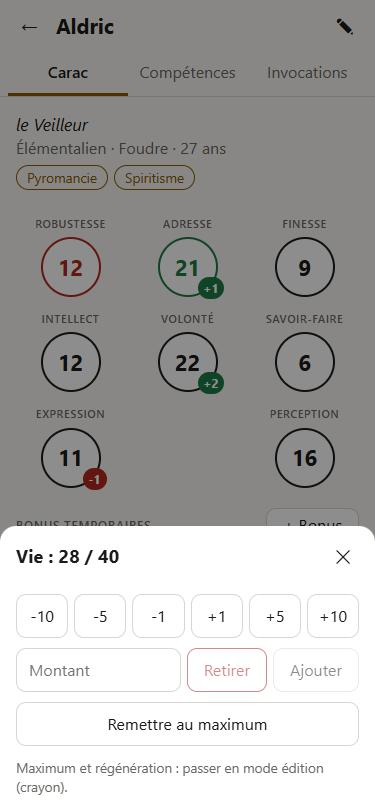
Toucher un losange : dépenser ou récupérer.
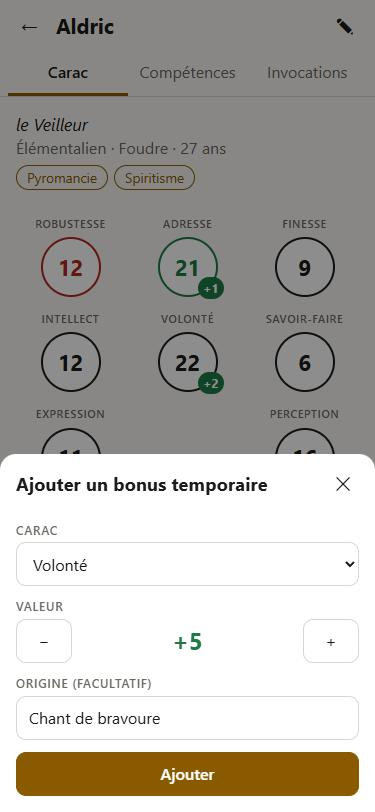
« + Bonus » : ajouter un bonus temporaire.
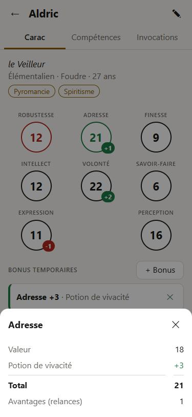
Toucher un cercle : le détail du calcul.
Dépenser ou récupérer Vie, Âme, Mana
Touche un losange. Dans la fenêtre :
les boutons -10-5-1+1+5+10 pour les petits ajustements ;
pour un montant précis (ex. 17 dégâts) : écris-le dans Montant puis touche Retirer ou Ajouter ;
Remettre au maximum après un repos.
Une ressource ne descend jamais sous 0 et ne dépasse jamais son maximum.
Bonus temporaires
Quand un sort, une potion ou une blessure modifie une carac pour un moment : touche + Bonus, choisis la carac, la valeur avec − / + (un malus est une valeur négative), et éventuellement l'origine (« Chant de bravoure »). Le bonus apparaît dans la liste et s'ajoute au cercle de la carac. Touche ✕ pour le retirer, ou Tout retirer en fin de combat.
Détail d'une carac
Touche un cercle pour voir la valeur de base, chaque bonus en cours, le total et le nombre d'avantages.
5. Le mode édition
Touche le crayon ✎ en haut à droite : un bandeau « Mode édition » apparaît et les champs deviennent modifiables. Touche ✓ au même endroit quand tu as fini.
Caracs : − / + pour la valeur, ligne « Av. » pour les avantages.
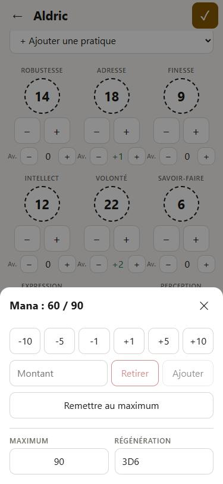
Dans un losange : maximum et régénération.
Identité : nom, titre (le nom obtenu en jeu), race, âge, élément si Élémentalien. Pour les pratiques immatérielles, choisis dans la liste « + Ajouter une pratique » (ou « Autre… » pour un nom libre) ; le ✕ d'une étiquette la retire.
Caracs : en mode édition, le cercle en pointillés montre la valeur de base (sans les bonus). Les boutons − / + la modifient. La ligne Av. règle les avantages (positif) ou désavantages (négatif).
Ressources : touche un losange ; en bas de la fenêtre, règle le Maximum et la Régénération (ex. « 2D6 »).
Changer la race par erreur n'efface rien : si tu choisis « Nain », le Mana est seulement masqué, et il revient intact si tu remets la bonne race.
6. L'onglet Compétences
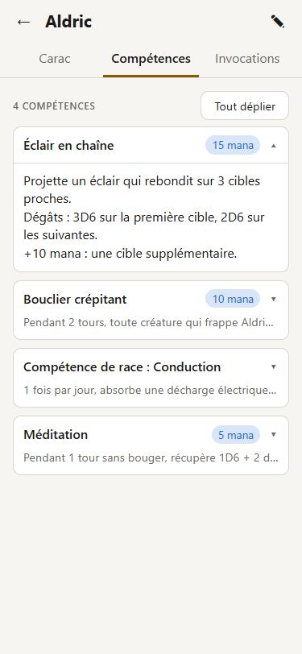
En partie : les cartes repliées, une carte dépliée.
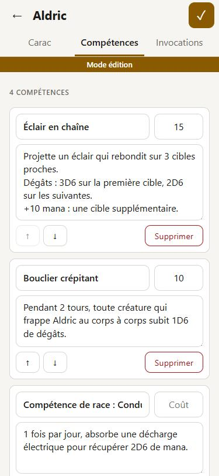
En mode édition : titre, coût, description.
En partie
Chaque compétence est une carte avec son titre, son coût en mana (s'il y en a un) et la première ligne de sa description. Touche une carte pour lire la description complète ; Tout déplier / Tout replier agit sur toutes les cartes.
Ajouter ou modifier (mode édition)
+ Ajouter une compétence (en bas de la liste) crée une carte vide.
Remplis le titre, le coût (laisse vide s'il n'y en a pas) et la description (les retours à la ligne sont conservés).
Les flèches ↑↓ changent l'ordre ; Supprimer puis Confirmer supprime la compétence.
La compétence de race est une compétence comme les autres : ajoute-la simplement à la liste.
7. L'onglet Invocations
Il regroupe les animaux totem, les invocations et les animaux de compagnie, sans limite de nombre.
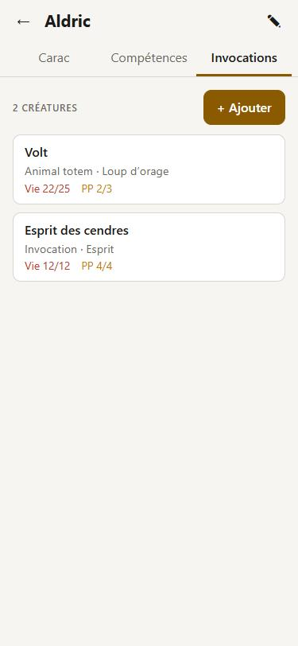
La liste, avec la Vie et les PP de chacune.
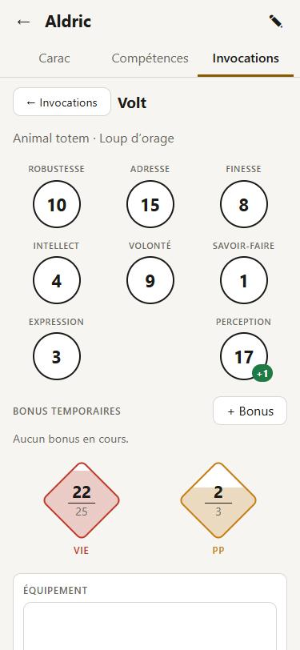
La fiche d'une créature.
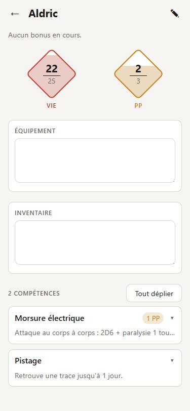
Ses compétences, avec un coût en PP.
+ Ajouter : donne un nom, la fiche de la créature s'ouvre. Ça marche aussi en pleine partie, pour une invocation faite sur le moment.
Touche une créature pour ouvrir sa fiche ; ← Invocations (ou le bouton retour du téléphone) revient à la liste.
La fiche d'une créature fonctionne comme celle du personnage : les 8 caracs, les bonus temporaires, les losanges Vie et PP (points d'action), l'équipement, l'inventaire et ses compétences, dont le coût est en PP.
En mode édition : nom, type (« Animal totem », « Invocation », « Animal de compagnie » ou autre), race, et en bas Supprimer cette créature. Dans la liste, les flèches ↑ ↓ changent l'ordre.
8. Sauvegarder et retrouver ses fiches
Les fiches survivent aux mises à jour de l'app, mais pas à une désinstallation, ni à la perte ou au changement de téléphone. Le fichier de sauvegarde te protège dans tous ces cas.
Sauvegarder
Écran d'accueil → carte Sauvegarde → Sauvegarder.
La fenêtre de partage d'Android s'ouvre : choisis Drive (ou envoie-toi le fichier par mail ou message).
Le fichier, nommé sansnom-sauvegarde-AAAA-MM-JJ.json, contient tous tes personnages avec leurs créatures. Fais-le régulièrement, par exemple après chaque séance.
Importer (nouveau téléphone, réinstallation…)
Installe l'app (partie 1).
Carte Sauvegarde → Importer → choisis ton fichier (dans Drive, Téléchargements…).
Pour chaque personnage, choisis :
Importer
le personnage n'existe pas encore sur le téléphone : il est ajouté.
Remplacer
la fiche du téléphone est remplacée par celle du fichier.
Garder les deux
la fiche du fichier est ajoutée en copie, avec « (copie) » dans le nom.
Ignorer
ce personnage n'est pas importé.
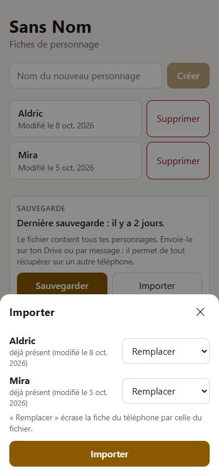
L'import : un choix par personnage.
Un souci, une idée d'amélioration ? Préviens Jean-Charles.